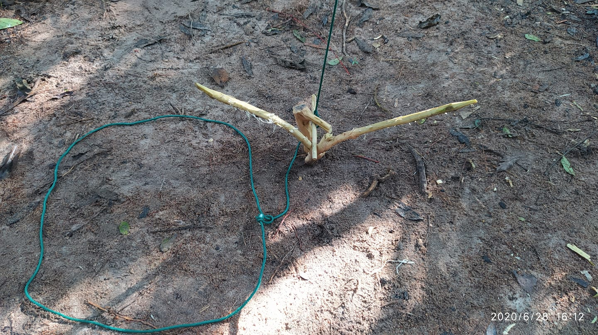
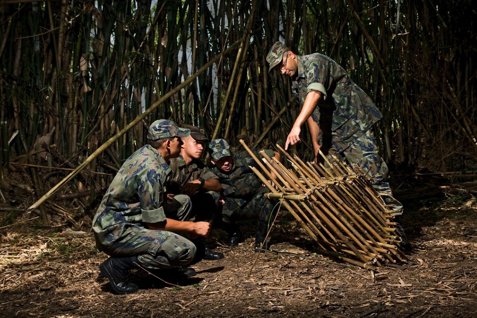
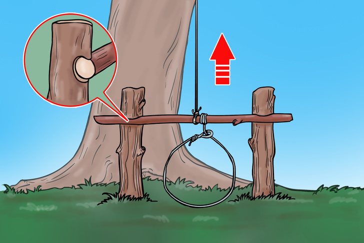
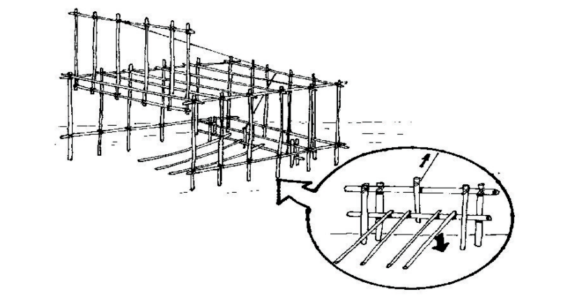
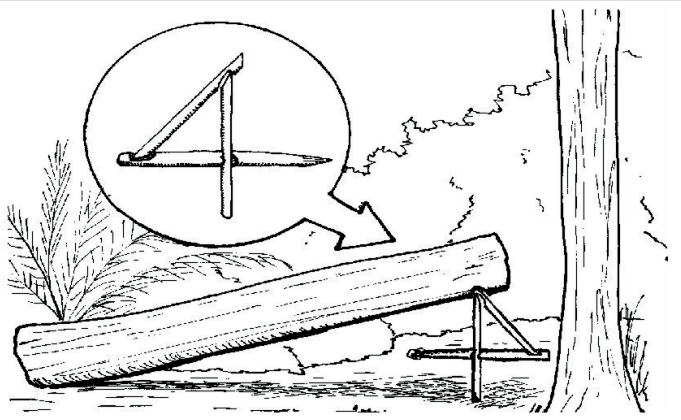
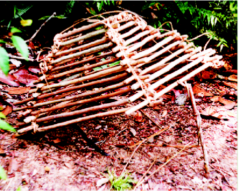
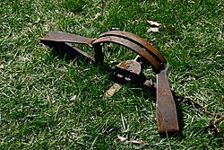

Armadilhas e características
Se encontrar em uma situação de sobrevivência ou segurança, pode precisar de medidas de preparação, fazendo necessário a criação de armadilhas para diversas necessidades.
As armadilhas devem ter uma grande margem de segurança, portanto, faça as estacas mais grossas, cave mais fundo e conserte os laços na base das árvores.

Observações
As armadilhas devem ser instaladas e verificadas por obstáculos naturais. Pode ser arbustos intransitáveis, grama alta, rocha. Posteriormente, os vestígios da estadia devem ser eliminados – para colocar a água, polvilhar com neve ou areia.
Aves de caça e pequenos animais com armadilhas de loop podem fornecer-lhe energia na forma de calorias valiosas.
As armadilhas deverão ser montadas antes do cair da noite e nas partes
mais estreitas das trilhas; quando se quiser canalizar o animal em direção a uma
delas, bastará construir um “túnel”.
Tudo o que se construir durante a montagem de uma armadilha deverá
ser muito bem camuflado, para não despertar suspeitas.

Tipos de armadilhas
Armadilha de laço
Crave dois troncos no chão e coloque um galho na horizontal. Prenda uma corda em uma árvore (para deixar a estrutura mais fixa e mais forte) e amarre um laço no galho (com o nó volta da ribeira, apresentado acima). Esse laço é ideal para caçar pequenos animais como coelhos e raposas.
Os laços deverão ter suas aberturas calculadas para deixar passar a
cabeça do animal, e não o seu corpo. Os de enforcar e suspender terão duas
vantagens: matar rapidamente e colocar a caça fora do alcance de outros
animais.



Chiqueiro
São armadilhas para pegar onça ou gato-maracajá.
Quando destinadas à primeira, não haverá necessidade de serem assoalhadas,
mas para o segundo sim, com madeira dura (paxiúba, por exemplo). Quando
para onça, deverá ter um outro compartimento na parte de trás, onde será
colocada a isca (qualquer animal vivo); quando para o gato-maracajá, não
haverá necessidade desse compartimento, pois a isca será carne, vísceras ou
peixe. O importante nessa armadilha será o gatilho que a fará funcionar,
composto de madeiras e cipós, e cuja construção dependerá da habilidade do
caçador

Mundéus
Muito empregados para pegar tatus
(china, canastra, quinze-quilos, peba, bola), baseiam-se no peso do próprio
tronco que, quando cai por desarme do gatilho, atingirá o animal. Serão
construídos sobre as trilhas ou próximos às tocas, e não precisarão de isca.
Quando associados a um laço, poderão apanhar animais maiores.


Armadilha com arma de fogo
A arma a empregar poderá ser uma
pistola, revólver, espingarda de caça, etc. A pontaria deverá ser amarrada de
acordo com a altura provável da vítima e sobre a trilha; praticamente, as
seguintes medidas são adotadas: uma chave (um palmo), para paca; antebraço-mão, para veado; e braço-mão, para anta. O gatilho (não o da arma) será
disparado quando o animal topar com uma das patas no cordel de tropeço
distendido sobre a trilha

Arapuca
Normalmente usada para pegar jacu, jacamim,
mutum, etc, ou seja, aves grandes

Cuidados
Sempre marque suas armadilhas para si mesmo. Pode ser um mapa da área, notas em um caderno mostrando pontos turísticos visíveis ou sinais visíveis apenas para você no chão. Assim, você mesmo não cairá na armadilha e não quebrará as armadilhas até que a presa apareça nelas.
Não se esqueça de desarmar armadilhas já desnecessárias para evitar a possibilidade de entrar nelas acidentalmente pessoas da área.
Toda a equipe na sobrevivência deverá conhecer a localização e não
poderá andar nas trilhas dos animais e, por motivo de segurança, as “áreas de
matar” devem ser evitadas.
